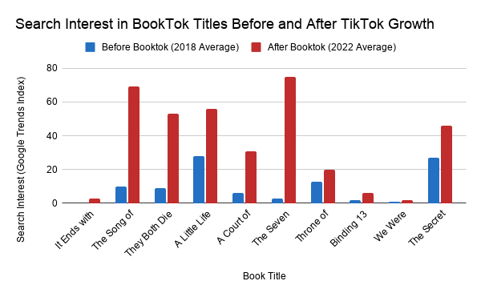
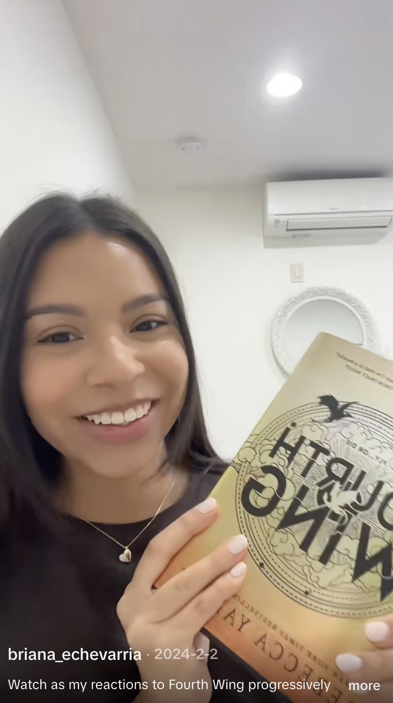
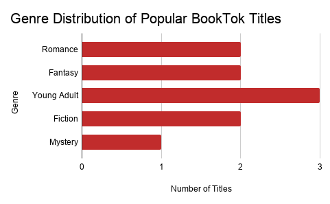

TikTok, known primarily for dance trends and short videos, has become a major force in the publishing industry. Its “BookTok” community has changed how readers discover books, often pushing older titles back onto bestseller lists and giving them a second life years after publication.
BookTok is a community on TikTok where users share short videos recommending, reviewing, and reacting to books. The space grew rapidly during the COVID-19 pandemic and is especially popular among younger readers, who use it to discover new titles and discuss their favorite stories.
For example, “It Ends With Us,” a romance novel published in 2016 by Colleen Hoover, saw a significant rise in sales years later after gaining attention on TikTok. Other titles have followed a similar pattern. Books such as “The Song of Achilles,” released in 2011, and “A Little Life,” published in 2015, returned to bestseller lists after gaining popularity on BookTok. These resurgences highlight a shift in how books succeed, with popularity no longer tied solely to a book’s release.
How BookTok Revives Old Books
This shift is especially visible in how older, or “backlist,” books perform. According to WriteStats, titles account for nearly three-fourths of overall book sales, suggesting that older books are not only resurfacing but often outperforming newer releases. Unlike traditional publishing models that rely heavily on release-week marketing, TikTok promotes content based on user engagement rather than publication date. As a result, a single viral video can introduce a book to millions of readers, regardless of when it was published.
What the Data Shows

Source: Google Trends data for selected titles, U.S. Average search interest for 2018 (pre-BookTok) and 2022.
Data also reflects this change in visibility. A comparison of Google search interest shows that several popular BookTok titles saw significant increases in attention between 2019, when BookTok first began to blossom, and 2022, when the platform was at a peak influence. Many titles that previously saw low or moderate search interest experienced sharp increases, reinforcing the platform’s role in driving renewed attention.
The hashtag #BookTok has generated more than 370 billion views globally.
Emotional connection plays a central role in this influence. Instead of formal reviews, BookTok users often share personal reactions — sometimes crying on camera or describing how a story affected them. This type of content emphasizes emotional, “visceral” responses, which research suggests makes recommendations more relatable and persuasive to viewers.

A BookTok creator reacts to “Fourth Wing” by Rebecca Yarros.
Video by @briana_echevarria on TikTok.
BookTok also functions as a large, interactive community that shapes reading habits. The hashtag #BookTok has generated more than 370 billion views globally,reflecting its scale and reach. Bookstores have responded by creating dedicated displays featuring titles popular on the platform, further reinforcing its influence in both digital and physical spaces.
According to the BBC, this impact has become significant enough to support the creation of official U.K. BookTok bestseller lists, which combine traditional sales data with social media trends. This development suggests that traditional bestseller rankings are no longer the only measure of a book’s popularity.
Beyond overall popularity, BookTok trends also reveal patterns in the types of books that gain traction. A sample of the same widely recommended titles shows a strong concentration in young adult, romance and fantasy genres. These categories often emphasize character relationships and emotional storytelling, which align closely with the types of reactions commonly shared in BookTok videos.
What Kinds of Books Go Viral?

Source: Author analysis of selected BookTok titles based on commonly recommended books. Google Trends data for selected titles.
This concentration suggests that BookTok’s influence may be especially strong for stories that prioritize emotional impact, rather than being evenly distributed across all genres.
A selection of popular BookTok titles, including “It Ends With Us,” “The Song of Achilles” and “A Little Life.” Covers sourced from Goodreads.
The platform has also changed how readers make decisions about what to read. Instead of relying on critics or traditional marketing, many readers now turn to social media. One student interviewed by Scholastic said she watches multiple BookTok videos before choosing a book, comparing creators’ opinions to decide what to read. A 2025 study of more than 600 BookTok users supports this behavior, finding that positive reactions to creators’ recommendations directly increased readers’ intentions to buy and read those books.
Overall, BookTok has reshaped how books are discovered, marketed and consumed. It has allowed older titles to reach new audiences while shifting influence toward readers and creators. As social media continues to shape consumer behavior, the publishing industry will likely continue adapting to a landscape where viral attention can be as powerful as traditional promotion.